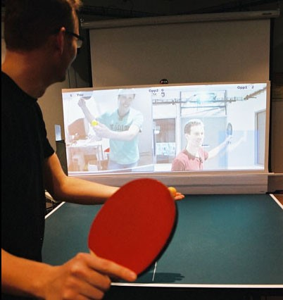

Exertion Gaming
Concept: Interactief basketbal
Interactie: Interactief basketbal zonder dat er een basketbal bord nodig is. Bal stuiteren op verschijnend vorm op de grond geeft bonuspunten/power. Rode vorm op de grond betekent dat daar niet op mag worden gestuiterd, anders is de bal voor de tegenstander.
Technische details:
- Aanraking (door bal) op de muur kan worden geïdentificeerd door electromagnetische sensor.
- Figuren kunnen worden geprojecteerd op de grond met beamers.
- Deze figuren kunnen voor een persoon worden geplaatst d.m.v. een infraroodcamera.
- Kinect kan deze figuren weer tracken en weet wanneer een bal de grond raakt.
- Hoe hogere hartslag een persoon heeft, dus hoe actiever die bezig is, hoe meer figuren er zullen verschijnen, of hoe hoger de multiplier wordt (1.5x).
Research: Remote Impact: Dit is een spel waarbij twee gebruikers hun gehele lichaam kunnen gebruiken om te elkaar. Elke speler krijgt zijn of haar tegenstander te zien in de vorm van een schaduw. Deze schaduw wordt geprojecteerd door een beamer op een groot matras. De locatie van de speler wordt bepaald door een “unique sensing system”, dat tevens de impact van elke slag of stoot meet zodat een hoge impact meer punten kan opleveren. Spelers kunnen de slagen van hun tegenstanders ontwijken, net als een echt potje boxen. Op het einde wint de speler met de meeste punten.

Table Tennis for Three: Wederom is dit een spel dat op afstand gespeeld kan worden. Dit keer kunnen niet twee, maar drie personen tegelijkertijd meedoen aan deze exertion game. Table Tennis for Three wordt met echte batjes en ballen gespeeld. Het idee is dat elke speler een echte tafeltennis tafel gebruikt, maar dat de overkant rechtop staat. Op dat gedeelte worden de twee tegenspelers geprojecteerd. Elke speler wordt “beschermt” door vier blokken. Deze blokken breken nadat er drie keer een balletje op wordt geslagen. Als een speler een blok van de tegenstander kapot heeft gemaakt, krijgt hij of zij een punt erbij. Degene met de meeste punten wint. Achterop het bord zitten acht “piezoelectric” sensoren die op de exacte positie zitten van de virtuele blokken. Doormiddel van geluidsgolven door het hout van de tafeltennistafel kunnen de sensoren de locatie van elk geslagen balletje achterhalen.
